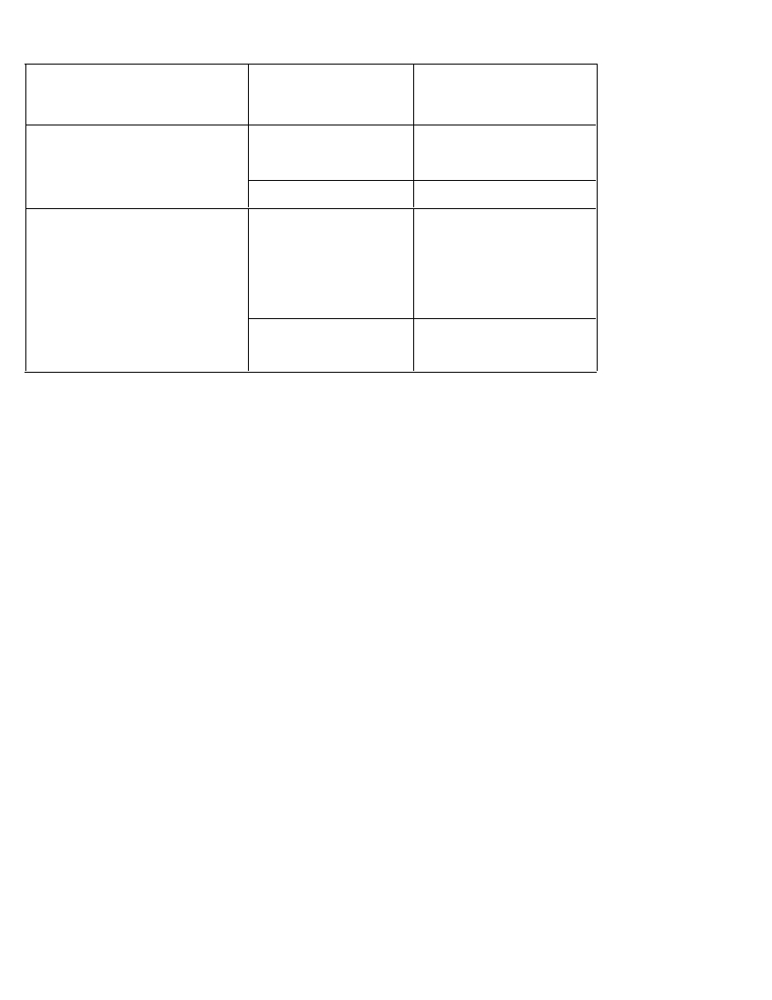

About OttoKonek
1. What is OttoKonek?
OttoKonek is a business partner that provides fintech solutions and encourages its partners to be able to build businesses
through various digital products and solutions, supported by the acceptance of payments from various sources such as QR,
debit and credit cards.
2. Who can become OttoKonek users?
All business owners can become OttoKonek users. OttoKonek will provide support for payment acceptance according to
business segments
3. What features can OttoKonek Partners benefit from?
MSME partners can sell digital products at competitive prices, get supplies of goods from various well-known distributors, and
accept QR payments.
I.
About the OttoKonek Application
1. I am a business owner. How do I join as an OttoKonek Partner?
here are the steps that you will take to join OttoKonek:
1) Downloaded OttoKonek and open the application
2) Select Register, select id card, take picture of your ID Card and your store
3) Enter your PIN
4) Enter the OTP code that has been texted to your cellphone
5) Your account has been successfully created! Please login.
6) QR stickers for receipt of payments will be received H + 14 from registration.
2. How do I download the OttoKonek application?
The OttoKonek application can be used for phones with Android 4.4 (KitKat) or above.
3. How does OttoKonek work as a QR payment application?
OttoKonek accepts payments via QR code from various source of fund or electronic money applications that have
collaborated by scanning QR codes.
4. What is the OttoKonek QR Code?
Stores that have joined OttoKonek will receive a QR code as the shop's identity as well as a payment instrument from the
buyer. The shop will get an OttoKonek QR sticker or just need to show the QR code on the cellphone to the buyer for
scanning. So, buyers only need to scan the store's QR code when paying and the money will automatically go to the store's
Sales in the application.
5. What is Sales?
Sales is the balance of the sale of merchandise for all types of transactions received and can be cashed into a bank account
on behalf of the merchant owner.
6. What is an Account?
Accounts is internal merchant balances that can only be used for invoice payments or purchases of OttoKonek products.
7. What do I get by joining as an OttoKonek Partner?
You will get many benefits by joining as an OttoKonek Partner, including:
No need to bother receiving cash or preparing change because everything has entered your OttoKonek application

Helping to monitor receipts because OttoKonek records all your daily transactions made through OttoKonek.
Can attract more buyers because they can receive electronic payments from various banks and electronic money
applications
Can increase your income through selling bills (Mobile Credit, Mobile Data, electricity, water bills, insurance, and
taxes)
Can be a sales agent for products that are registered with OttoKonek such as Ice cream, necessities, fashion, and
many others.
And there are many other benefits that will continue to grow!
8. What payment applications can be accepted at OttoKonek Partners?
Currently, OttoKonek can accept payments from various source of fund or electronic money applications from various
issuer who have registered with QR.
II. About Account
1. Can I register myself without the help of sales / marketing personnel?
Currently, the registration process, whether to become an OttoKonek Partner or Modern Merchant, requires assistance
from our sales team / marketing personnel.
2. How do I log in to my OttoKonek account?
Enter the mobile number that has been registered and then enter the PIN.
3. What if I want to change my merchant code?
Merchant codes are issued by the system and cannot be changed.
4. Can I have more than one OttoKonek account?
Each merchant owner is only allowed to have one OttoKonek account.
5. Can I edit my account?
Yes.
6. What if I forgot my account PIN?
1) Click "Forgot PIN".
2) Enter your cellphone number.
3) Enter the OTP code that was sent to your cellphone by SMS.
4) Answer the security question.
5) Create a new PIN code.
6) Please log in with your new PIN code.
7. What if my cellphone is lost?
Please contact OttoKonek Customer Service via (need for confirmation) or WhatsApp at (need for confirmation). The
OttoKonek team will immediately help to process your account.
III. About Transactions
1. What transactions can be made through OttoKonek?
OttoKonek can be used to accept QR transactions and buy and sell bills (Mobile Credit, Mobile Data, electricity, water bills,
insurance, and taxes).
2. How do I receive payments via OttoKonek?
You can receive payment via OttoKonek by:

1) Show your QR code to the buyer:
1. Click "Accept QR Payment"
2. Show the QR code that is shown on your OttoKonek Application screen, or enter the payment amount and click
"Update QR Code"
3. Show the QR code to be scanned by buyers
2) Ask buyers to scan the QR sticker affixed to your shop window and enter the nominal purchase.
3. Who can become a QR merchant?
All partners and merchants who register and comply with the requirements (see the requirements to become an
OttoKonek merchant) able to receive payments using QR.
4. When can my merchant accept payments via QR?
Your Merchant can receive QR if it is registered and passes the verification process.
5. Are there any fees for QR transactions?
Every transaction via QR will be subject to a transaction fee. These costs will be deducted immediately when the buyer
makes payment. The seller will receive the final amount that has been deducted.
IV. Failed Transaction
1. What if I have topped up my OttoKonek Wallet balance, but the balance does not go to my account?
Please submit your complaint via OttoKonek Customer Care WhatsApp at (waiting for information). The OttoKonek team
will immediately check your top up balance. If the top up is proven to have failed, then we will refund a maximum of 7
(seven) working days.
V. Transfer
1. How do I transfer the Sales Balance to the Bank Account?
1) Select the "Sales" menu in the upper left corner of the OttoKonek Application screen.
2) Select the "Withdrawals to Bank”, then select a registered bank account.
3) Enter the amount you want to transfer, then select the desired transfer method
4) The OttoKonek application will display the transaction details. Click "Withdraw" if you want to continue.
5) Enter your PIN code.
6) Transfer complete.
VI. Top Up
1. Where can I top up my OttoKonek Account?
You can top up your OttoKonek Account via (waiting for information).
2. How do I top up? (need for information)
Via Internet Banking / Mobile Banking INA PERDANA BANK:
1) Open internet / mobile banking that is already available on your cellphone or browser screen
2) Select the transfer menu between banks / other banks
3) Select the destination bank for transfer: BANK INA PERDANA (bank code: 513)
4) Enter the account number in the form your virtual account number (99002XXXXXXXXXXXX)
5) Enter the desired amount
6) Transaction Success
Via ATM Bersama INA PERDANA BANK:
1) Insert your ATM card and PIN
2) Select the Transfer menu, then select Other Bank
3) Enter BANK INA PERDANA code (bank code: 513)
4) Enter your account number in the form of your virtual account number: (99002 + your cellphone number (example:
99002XXXXXXXXX XXX)
5) Enter the desired amount
6) Transaction Success
VII. OttoKonek Product Agent
1. What is an OttoKonek product agent?
OttoKonek partners who are interested in increasing the variety of merchandise and increasing their income can become
OttoKonek product agents. OttoKonek collaborates with several trusted suppliers of goods in Indonesia. OttoKonek
partners who are interested in becoming agents can take the stock from OttoKonek suppliers and resell the product at
shops / stalls.
2. How do I register to become an OttoKonek product agent?
Please contact OttoKonek sales team or OttoKonek Customer Service. OttoKonek sales / marketing team will immediately
come and register your shop.
3. What is the process of becoming an OttoKonek product agent?
1) The OttoKonek sales / marketing team comes to your store / stall to survey and assist with the registration process.
You will be asked to complete additional personal data (if needed) and sign a commitment letter.
2) After registration is complete through the application. Please follow the next steps in the application. Especially for
ice cream product agents, within a few days, the freezer will be delivered to your shop
3) After placing an order either through the application or through sales / marketing personnel. You will receive stock
of goods delivered directly to your shop / stall. Happy selling and increase your profit.
For ice cream products only: A few days after stock delivery, the OttoKonek sales team will come to your shop to collect stock
and record your next order. Bill payments must be made through the OttoKonek application.
4. Do I have to be registered as an OttoKonek Partner to become an agent of OttoKonek products?
Yes, you must first become an OttoKonek Partner to become an OttoKonek product agent.
5. Can I order goods from OttoKonek suppliers through the application?
For basic / daily necessities, you can order directly via the application.
Especially for ice cream products, it is only served through OttoKonek's sales force.
6. What if I want to stop being an OttoKonek product agent?
Inform the OttoKonek sales team that you are no longer interested in becoming an OttoKonek product agent. Pay off your
bill immediately.
Especially for ice cream products, the OttoKonek team will take the freezer / shelf that was loaned to your shop as soon as
you stop being an agent.
Customer Service
1. Where can I contact if I have complaints and questions regarding other OttoKonek features or services?
Please contact OttoKonek Customer Service at:

Operational Days
Media service
(excluding national
Operating Hours (WIB)
holidays)
Call Center
Monday - Friday
08.00 - 20.00
Premium: (need for confirmation)
Saturday
08.00 - 18.00
Customer Service
Email : (need for confirmation)
Monday - Friday
08.00 - 20.00
WhatsApp : (need for confirmation)
Social Media :
Instagram: (need for confirmation)
Facebook: (need for confirmation)
Twitter: (need for confirmation)
09.00 - 18.00
Saturday